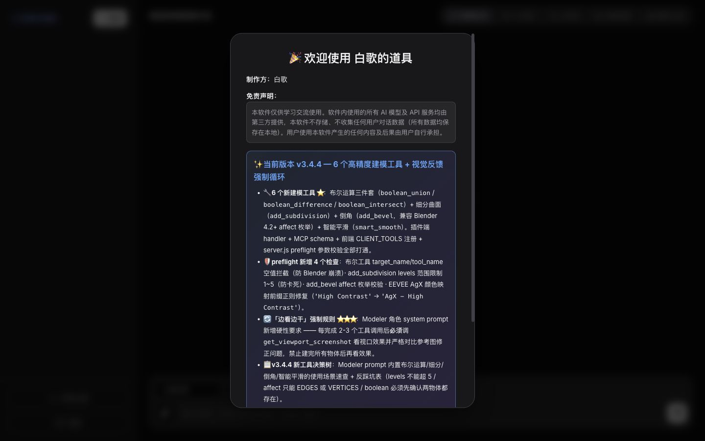
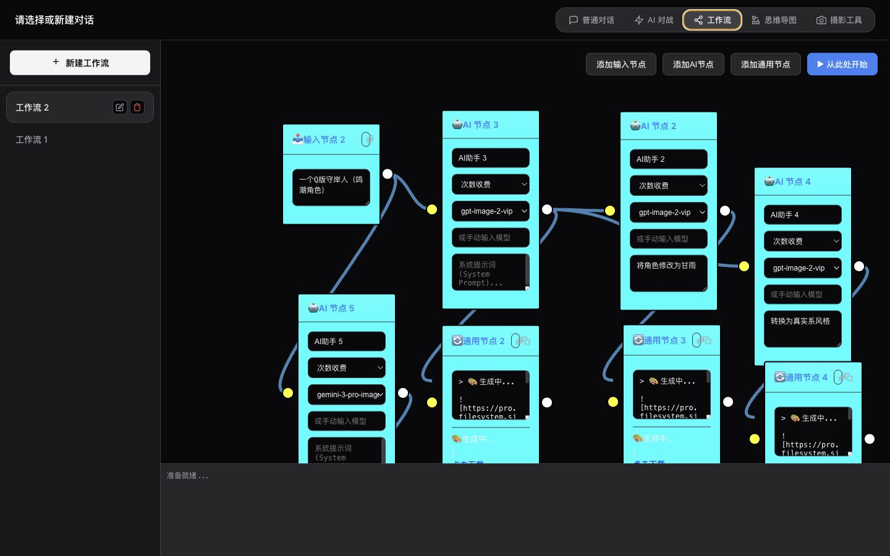
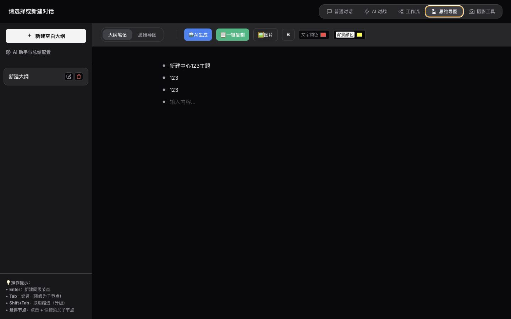
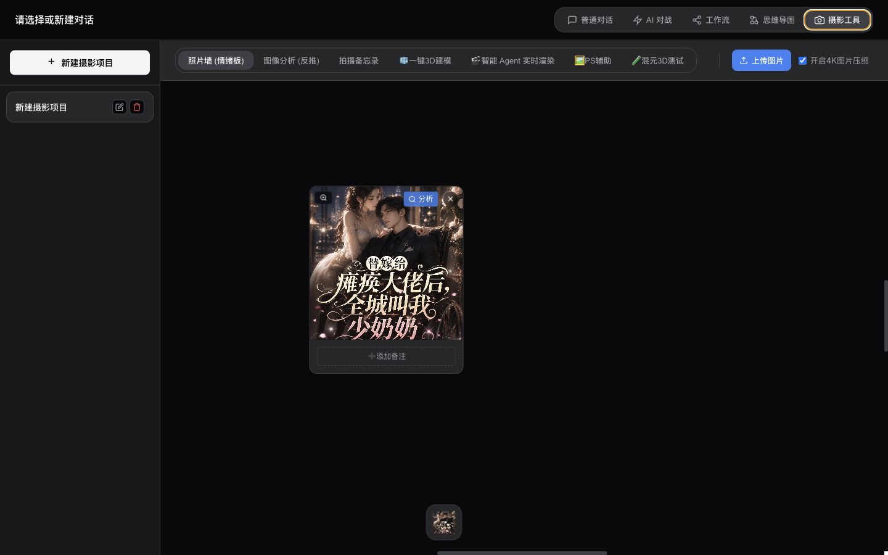
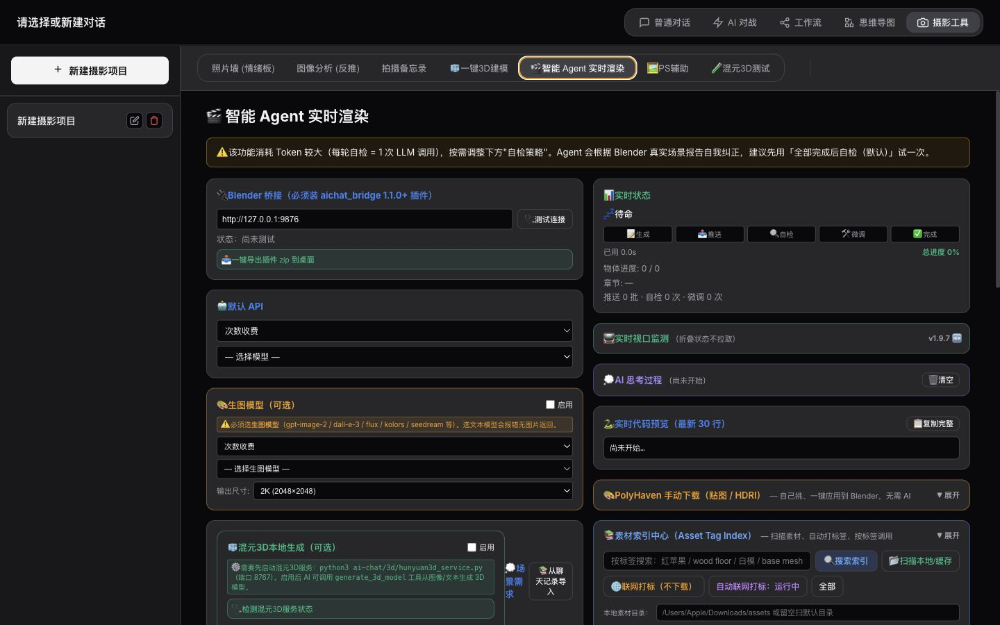
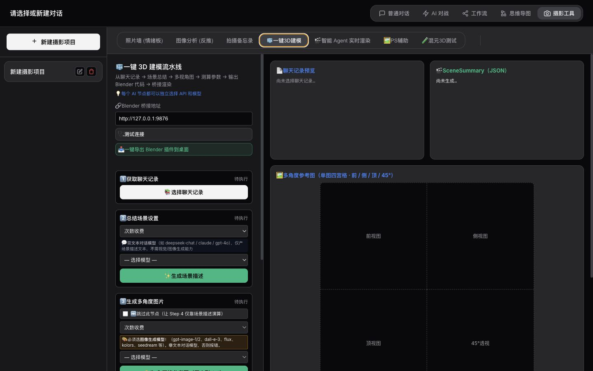

普通对话
快速提问、整理修图思路、分析图片、保存摄影后期和建模过程。
它不是只给你一个聊天框。摄影后期、修图方向、图片分析、Blender 场景笔记和模型讨论都能放进同一个本地工作台。
快速提问、整理修图思路、分析图片、保存摄影后期和建模过程。
让多个模型围绕同一个后期方案或建模需求给出不同角度。
把重复的修图流程、提示词流程、建模流程拆成可复用节点。
把聊天和分析结果沉淀成结构化大纲，方便继续扩展项目。




Agent 会把摄影后期或 Blender 建模需求拆成计划，调用 Blender 插件执行脚本，拉取视口截图检查结果，再继续修正。你看到的是围绕 Blender 视口循环工作的本地创作助手。

第一版不追求云端账户和复杂订阅，先把本地可跑通的创作链路卖清楚。
写下摄影后期、背景搭建或 Blender 建模需求。
AI 总结场景结构、视觉参考、灯光和镜头关系。
生成参考图、场景说明或建模参数。
Agent 调用 Blender 插件执行建模脚本。
读取视口截图和场景报告，继续检查和修正。
保存脚本、计划和反思记录，方便继续修改。

适合从小范围付费验证开始。等有云端账号、模板更新、托管渲染或持续支持后，再考虑订阅。
用于了解界面、配置模型、管理创作思路。
面向摄影后期、Blender 建模和 3D 场景创作者。
适合第一次搭建 AI + Blender 工作流的用户。
把容易误解的地方提前说清楚，成交会少很多来回解释。
不是。它是本地运行的软件，数据主要保存在用户电脑上。
不包含。用户需要配置自己的 API 服务，并自行承担第三方费用。
可以使用基础 AI 工作台；3D 功能建议懂一点 Blender 基础，或者选择支持版。
需要看你使用的模型、素材、资产和输出内容许可。软件不替你保证第三方授权。